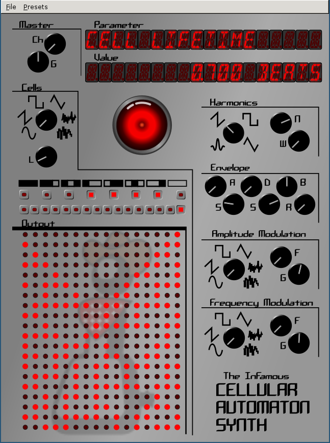
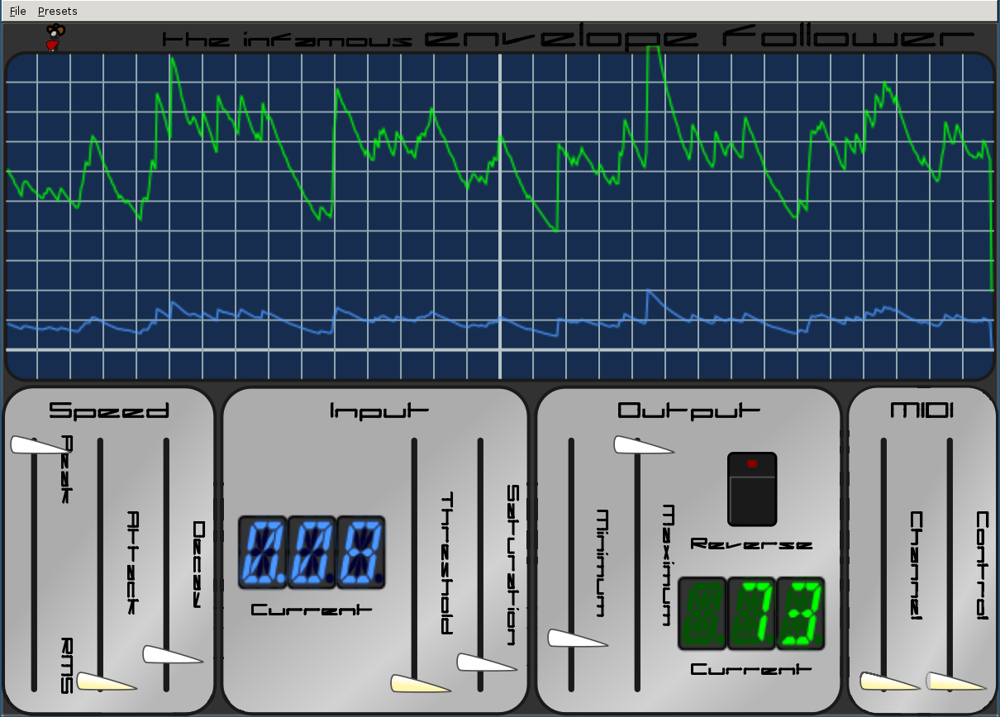
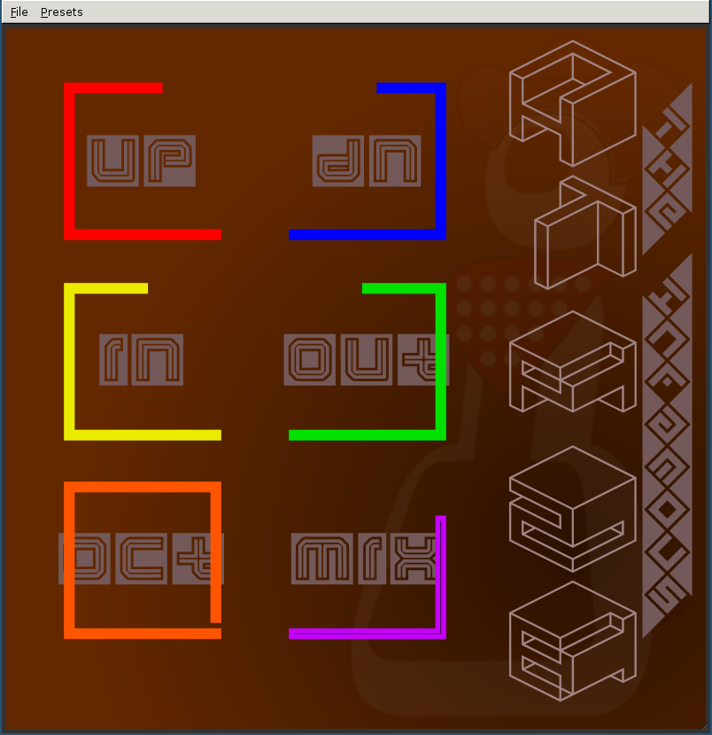
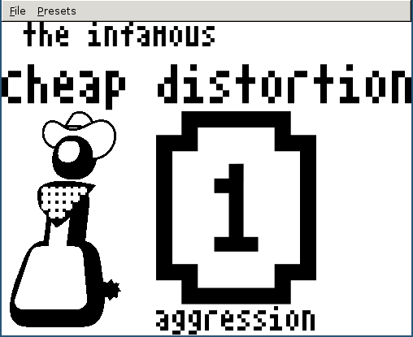
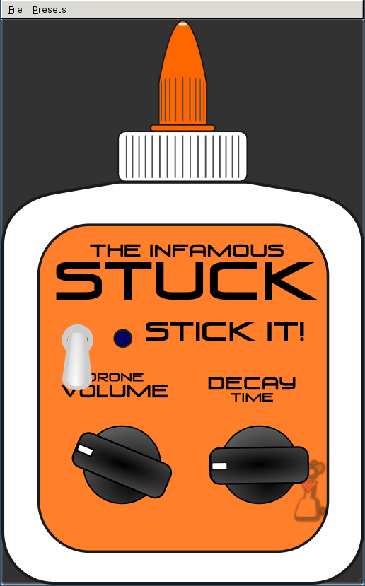
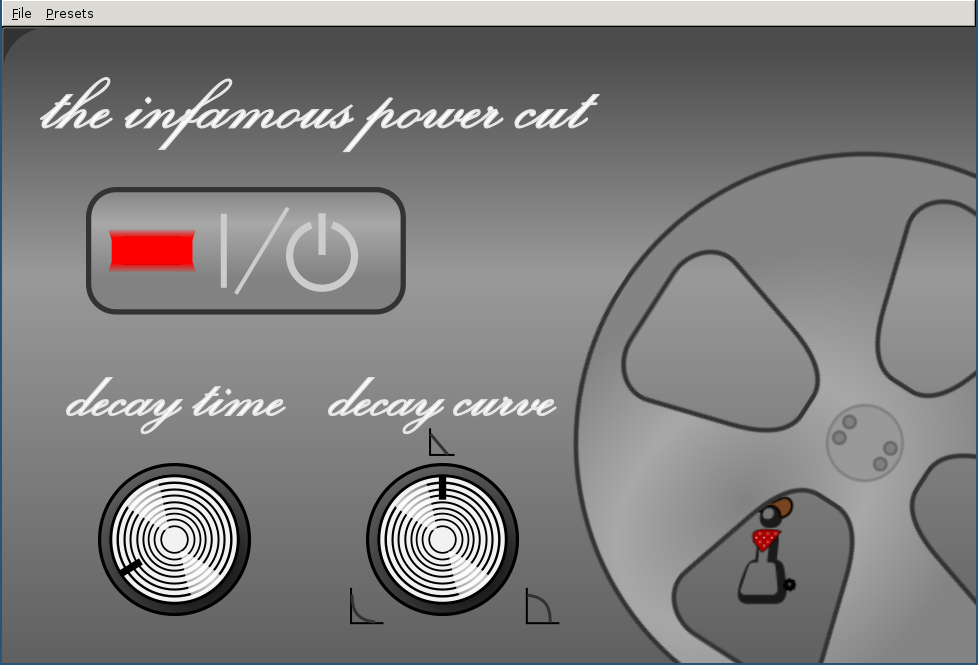
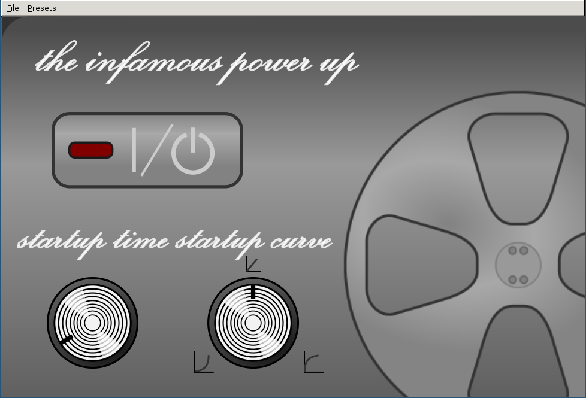

The Infamous Cellular Automaton Synth

This synthesizer plugin is an additive synthesizer,
where 16 harmonics are added to the fundamental according to rules of
elementary cellular automata. A rule is created and determines whether
a cell will survive, die, or be created based on its previous state and
its neighbors. Thus a harmonic will either play or be silent according
to its associated cell's state. The 16 cells are on a torus where the
ends wrap around to meet, therefore the highest harmonic influences the
state of the first harmonic. This synth has no filter, so harmonics
must be controlled through the rule and initial condition.
In the GUI you can select each bit of the rule and
initial condition value, or click on the space on the left of all the
buttons to enter a value directly. This dialog accepts hexidecimal values
formatted as 0xFFFF. Also you can click HAL 9000 for random settings.
As with all the infamous plugins, you can middle-click a knob or fader to enter a
new value in directly.
To assist in your sound design
if not using the GUI there is a command line utility included in the
source called rule that will print out the cell states in sequence (see
the README). For more information regarding Cellular Automaton in
general read wikipedia under
Elementary
Cellular Automaton.
It is unlimitedly polyphonic and has 2 LFOs. Every
oscillator has 5 different waveforms to select from. It also features
an ADBSSR envelope generator for the amplitude envelope.
Parameter Description:
- CHANNEL - Midi channel, set to 0 for all
channels
- MASTER_GAIN - total volume
- RULE - rule for determining next state in
cellular automaton
- CELL_LIFE - length between cell states, measured
in beats (most hosts default to �)
- INIT_CELLS - initial condition of cells when a
note is played
- N HARMONICS - number of harmonics added in
- HARM_MODE - determines gains of the harmonics
- HARM_WIDTH - std. deviation of random detuning of harmonics in cents
- WAVE - basic Waveform of the harmonics
- ENV_A - attack time
- ENV_D - decay time
- ENV_B - break point gain (to switch between
decay and swell)
- ENV_SWL - swell time
- ENV_SUS - sustain gain
- ENV_R - release time
- AMOD_WAV - amplitude modulation waveform
- AMOD_FREQ - amplitude modulation frequency
- AMOD_GAIN - amplitude modulation gain
- FMOD_WAV - frequency modulation waveform
- FMOD_FREQ - frequency modulation frequency
- FMOD_GAIN - frequency modulation gain
The Infamous Envelope Follower

This is a fully featured envelope follower plugin. It can be used for normal things like pumping the gain with the bass, building your own compressor. I prefer to hook up crazy things like the mid scoop of a distortion to the guitar envelope.
Someone just wanted it so I made it. It sends a midi control value according to the amplitude of the input audio. You'll notice that there are several extra ports that don't appear in the fancy GUI. When this plugin was created I implemented an LV2 CV port which would provide higher resolution than a midi port, but CVs are very nearly completely unsupported at this time by LV2 hosts. If you'd like this feature (because you are using Ingen) then you can re-enable CV ports as described in the README.
Parameter Description:
- PEAK/RMS - blend of peak and/or rms value for amplitude
- THRESHOLD - audio low value mapped MINV
- SATURATION - audio high value mapped to MAXV (anything greater still outputs MAXV)
- A TIME - rise time of the output
- D TIME - fall time of the output
- CHANNEL - Midi channel to send output over
- CONTROL_NO - Midi control # to change
- MINV - minimum midi value to send
- MAXV - maximum midi value to send
- REVERSE - switches direction of the midi output (larger input amplitude -> smaller midi value)
- CMINV - minimum lv2 control value to send
- CMAXV - maximum lv2 control value to send
- CREVERSE - switches direction of the lv2 control output
The Infamous Hip2B

This is a distortion plugin that is even more fun than I imagined. Inspired by effect pedals by dwarfcraft, this takes your analog signal and turns it into a square wave. It gives you a glitchy type effect. It was originally meant to be pretty minimal, but I decided there wasn't a good reason to be so a simple amplifier was added to turn it down, and some basic DC offset removal was added. Its not limited in polyphony or anything, it is simply distorting your signal to be a bandlimited square wave. Basically its a switching function with hysteresis. You could roughly consider it converting everything to 1 bit audio. Play with the up and down threshold parameters to change the square wave pulse width and have some fun. You'll find lower values give more sustain, but stay away from 0.0 on those two, it gets really loud and noisy. Unless thats what you want. Be my guest. Depending on your noise floor, other low values may be problematic in the same light. The lowering the octave makes it sound much more glitchy.
Parameter Description:
- UP - threshold that the input must cross for the square wave to rise
- DOWN - threshold that the input must cross for the square wave to fall
- OCTAVE - change the octave of the square wave output (down to -2)
- IN GAIN - input gain, also affects the output signal in the mix, use to get your signal passing the thresholds
- WET/DRY - mix of the original signal with the square signal
- OUT GAIN - output gain
The Infamous Cheap Distortion

Another distortion plugin, but this one I wanted to use as little processing as possible. Using some hackery on the bits I accomplished a pretty nice saturation function waveshaper using only a bitshift and an integer add. Thats right, not a single floating point operation! It isn't actually much lower useage than other simple distortion algorithms, but it was a fun exercize. Becuase the goal was super cheap computation, there is no input or output gains, so make use of your simple amplifier plugins. All in all though it worked out better than I dreamed though. It even has 3 different waveshapes of increasing "aggression". On the 2 or 3 setting, you'll probably want a gate, because it has really high gain for values near zero.
Parameter Description:
- AGGRESSION - high, really high, or rediculously high gain
The Infamous Stuck

This is a clone of the electro-harmonix freeze. It drones the note being played when the "Stick It!" port is set to 1 (or the CV port input goes above 1), causing the note to be "stuck". Once the port falls below 1 the drone is released with a decay set in seconds. The drone is added to the dry signal (so original signal is passed through at all times un-processed). This plugin is pretty useless except in live situations, though I'd love someone to creatively prove me wrong.
Parameter Description:
- STICK IT - trigger the drone being sampled and held or off (if less than 1)
- DRONE GAIN - gain of the drone
- RELEASE - time of drone decay when released in seconds
The Infamous Power Cut

This effect is commonly called tape stop. Another one I might not actually use, but the DSP was fun anyway. It just copies the audio through until the "Pull the Plug!" port is toggled to 1 (or the CV trigger port goes above 1). Then it slows the audio down gradually to a complete stop and outputs silence until the trigger is released, much like unplugging the power chord of a record player or maybe tape player. I've never heard this happen to a tape player. A turntable actually has enough inertia. Anyway, you can adjust the length of the decay and the curve. Its pretty fun. With some automation this can make some crazy glitch type effects.
Parameter Description:
- PULL THE PLUG - start the decay or turn it off/reset it (if less than 1)
- DECAY TIME - length of decay in seconds
- DECAY CURVE - adjusts the "shape" of the decay. Convex (log), linear, or concave (exponential) curves, Try them all
The Infamous Power Up

This is the opposite of the power cut. It outputs silence until the "Fire it Up!" port is set to 1. Then it slowly climbs up to full playback speed. Its completely useless for live use as it introduces nearly 10 seconds of latency. But in a modern daw with latency compensation it should work fine.
Parameter Description:
- FIRE IT UP - start the "windup" or turn it off/reset it (if less than 1)
- START UP TIME - length of decay in seconds
- START UP CURVE - adjusts the "shape" of the windup. Convex (log), linear, or concave (exponential) curves, Try them all
The Infamous EWham
This plugin is my version of a pitch shifter, meant more for live use than for recording. Its my implementation of the digitech whammy peda. It gives a convenient control to bind to a midi CC to go between shift amounts and lets you pick arbitrary intervals between 3 octaves down and 2 octaves up (in half steps). Its based on the algorithm used in the zita AT1 pitch corrector and seems reasonably light and accurate. You will find it doesn't work well on polyphonic sounds, but is great for leads.
Parameter Description:
- EXPRESSION - controls pitch shift amount, blending between the start and finish values
- START - shift amount in semitones when expression is 0
- FINISH - shift amount in semitones when expression it 1
- MODE - classic means just shift pitch, harmonizer mixes in the dry signal as well, chorus also does a mix but changes start and finish to be measured in cents rather than semitones, allowing you to dial in a nice chorus effect
- LOCK MODE - decides what happens as you change expression, none will let it stay exactly at the value set by expression, land on semitone makes it slide to the nearest semitone if you stop moving expression while its in between half steps, lock to semitone makes the shift value jump from one half step to another (can make you sound like you're playing crazy fast licks!)
Coming Eventually...
I'm always tinkering. I have a lengthy list of things that would be useful or interesting plugins as well as a notebook full of algorithms I developed on paper because the dsp was challenging and interesting. Now with the GUIs behind me I'm excited to do some more DSP. Too much to do and so little time... Another synth is in order, but that takes a lot of time and its nice to have small simple projects. I might go work a bit to help some plugin hosts and get the CV situation a little better. If you'd like to contribute to the community, that would be a great way. As always if you really need something let me know I love to help, but time is expensive.